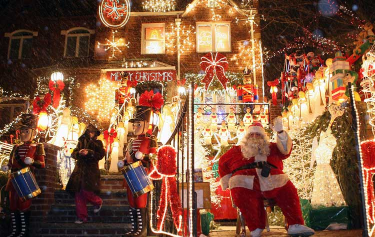
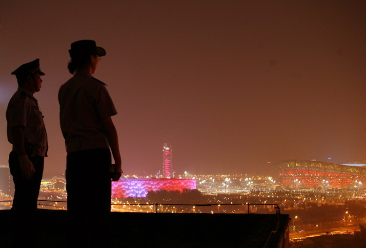

我知道你知道今天是平安夜。可能你会在一个情调满满的西餐厅预订两个靠窗的位置，有燕尾服、拉小提琴的侍者，桌上有娇艳暧昧的玫瑰，或许从窗户往外看，你还能俯瞰整个城市的灯红酒绿、车水马龙。或许，你会和家人一起，围坐在桌旁，电视节目旁若无人的自己播放着，你们吃饭、聊家常，阳台边还闪烁着斑斓的圣诞树。也或许，你会参加一个盛大的party，遇见感兴趣的异性，你们唱歌、喝酒、跳舞、释放。
在平安夜的发源地，传统上这天是摆设圣诞树的日子。发展到今天，平安夜不仅仅是指“24号的夜”了，而是延伸到了24号全天。这天，千千万万欧美人都风尘仆仆的赶回家中团聚。大多数欧美家庭会团聚在家中共进丰盛晚餐，然后围坐在熊熊燃烧的火炉旁弹琴唱歌、共叙天伦之乐。或者举办一个别开生面的化妆舞会，通宵达旦地庆祝平安夜这样一个幸福、祥和、狂欢夜晚。据说圣诞之夜，圣诞老人还会悄悄地给孩子们准备礼物放在长筒袜里，所以熊孩子对这个节日是非常期待的。
这些你都是知道的。
“平安”两个字有着许多的义项。它是很多人的名字——中国流行男歌手、中国内地女演员甚至是中国明朝前期武将。它还是中国作家人海中创作的小说、一家保险公司的名称……但“平安”二字最通俗的义项就是一个简单的汉语词组，它代表着人们平淡而美好的愿望下不变的追求和对安稳生活的无尽守望。
北京时间4月25日14时11分，尼泊尔发生8.1级地震，至少8786人死亡，22303人受伤，12座世界文化遗产受损。
2015年5月中国确诊首例MERS感染者，密切接触者78人。恐惧瞬间将人们拉回非典，MERS的传播与SARS极为相似，死亡率更高。
2015年6月1日，长江中游，满载乘客的东方之星轮船因遇龙卷风而倾覆。客轮上共454人，仅12人成功获救，442人葬身江底。
2015年8月12日深夜，爆炸的火光染红了天津滨海的夜空，165人遇难8人失联，数十米高的蘑菇云成为天津人心中无法磨灭的印记。
2015年11月13日晚，法国巴黎遭到ISIS的恐怖袭击，5次爆炸，5次枪击，至少132人死亡。
或许平安夜看到这些数据有些扫兴，更多的时候我们觉得灾难离自己很远，但每当不可抗拒的破坏性灾难发生时，心里又总会震颤。平安是福，平安夜享受节庆欢愉的同时不要忘记珍惜眼前的平安，祈愿未来的安稳。
1、12月24是基督教的平安夜，传统上这天是摆放圣诞树、一家团圆的日子；
2、平安夜在享受团聚、欢乐的节日氛围的同时，用心感受“平安”二字的深刻含义，愿你的每一天都平安。